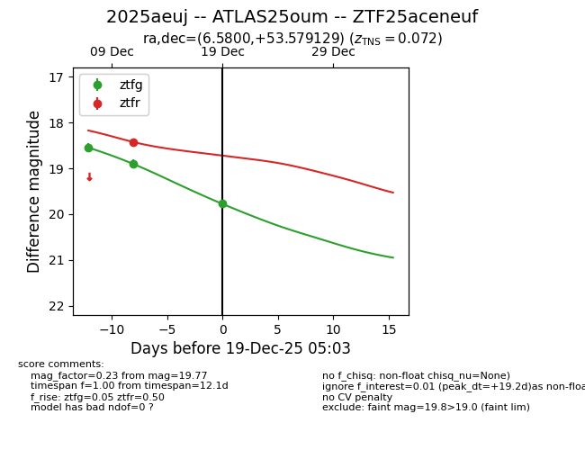
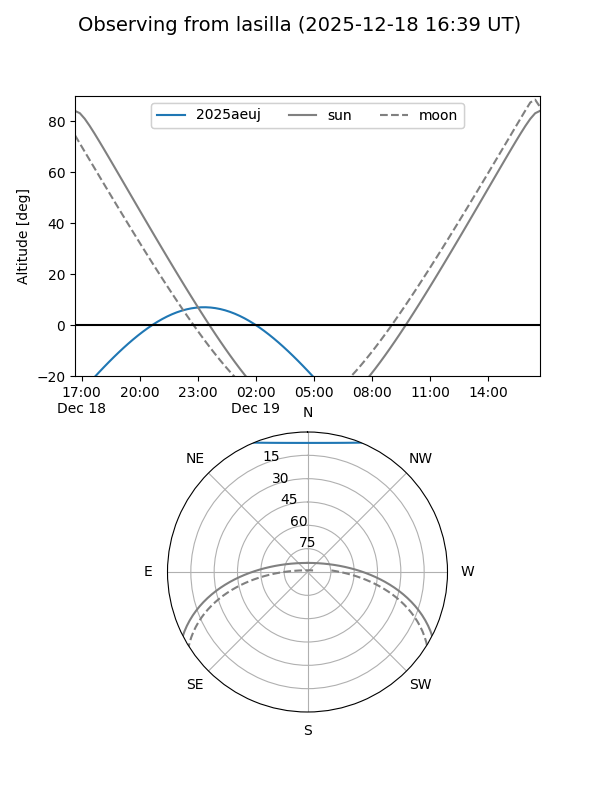
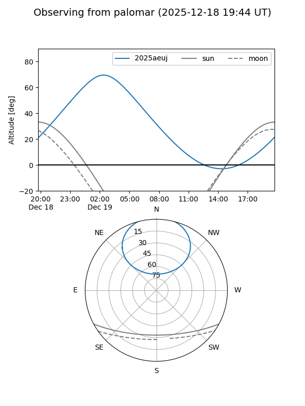
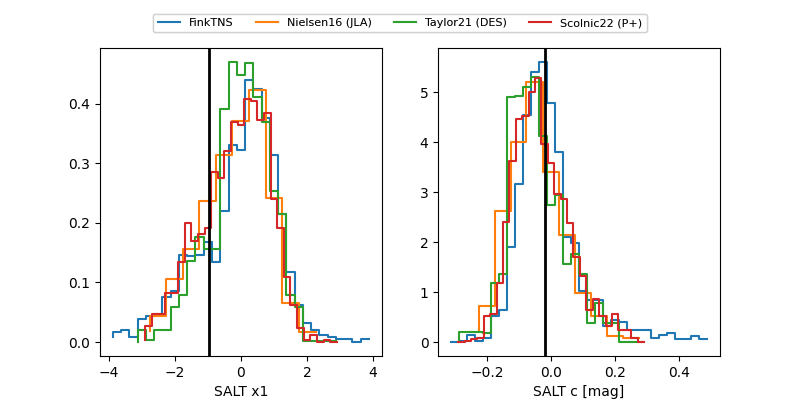

2025aeuj
Target 2025aeuj at 2025-12-19 05:04
Aliases and brokers:
FINK: fink-portal.org/ZTF25aceneuf
Lasair: lasair-ztf.lsst.ac.uk/objects/ZTF25aceneuf
ALeRCE: alerce.online/object/ZTF25aceneuf
TNS: wis-tns.org/object/2025aeuj
YSE: ziggy.ucolick.org/yse/transient_detail/2025aeuj
alt names
ZTF25aceneuf (ztf,fink_ztf)
2025aeuj (tns,yse)
ATLAS25oum (atlas)
Coordinates:
equatorial (ra, dec) = 6.5800,+53.57913
equatorial (HMS+DMS) = 00:26:19.19,+53:34:44.87
galactic (l, b) = (119.1609,-9.10861)
Flags:
Photometry:
last ztfg=19.77, ztfr=18.42
3 ztfg, 1 ztfr detections
Lightcurve

Visibility


Additional plots
